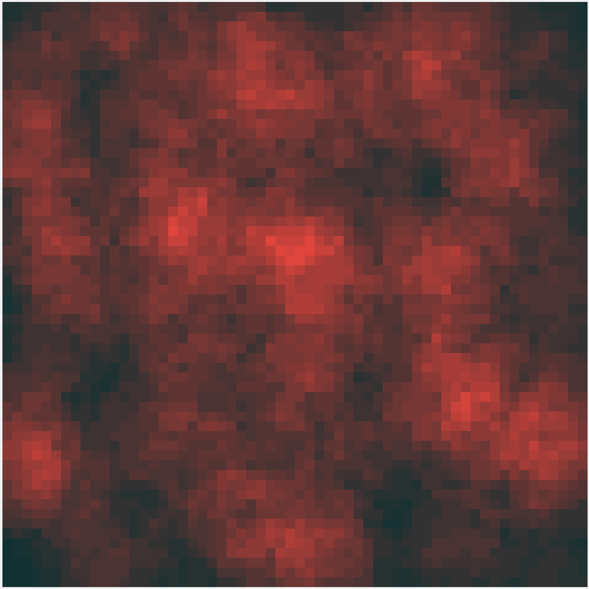
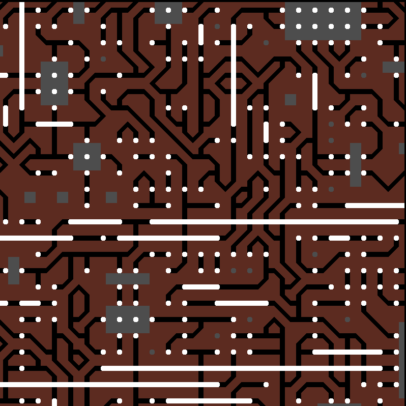

About Me
This is the about me section. I will include information about my background, education, interests, and more.
I am Stefan Nicov, currently pursuing a double degree in Statistics and Economics at Harvard University, with plans to complete a concurrent Master's in Statistics and a minor in Computer Science.
Quantitative disciplines have always been my primary interest. It all began with math in 5th grade, gradually moved to chemistry by 8th grade, and then to physics in 10th grade. I've participated in multiple International Physics Olympiads (more about that here). However, at Harvard, I decided to continue my studies in Economics & Statistics. Why?
I find them very similar. In Physics, you have a model of the world that is based on current knowledge (laws of physics, empirical observations, etc). This model is not how things "really" work, but it is our best estimate at the moment. By doing science and research, we always attempt to improve this model of the world. In this sense, Economics and Statistics are doing a similar thing: we have statistical and economical models of stock prices, household income, inequality, etc., that cannot fully explain everything, but are our best guesses at the moment. When analyzing why I was relatively good at physics and why I liked it, I came to the conclusion that it is fundamentally because of the model paradigm. When the first principles are established (basically, defining in what model we are working in), we could explore all the consequences of this model. Therefore, the transition to Stats & Econ was more than natural and smooth.
I mostly do it in p5.js and processing.js, JavaScript libraries built for generative art. Below are some examples of what I do:


The link to my openprocessing.org profile is here and more about what I do in generative art is here.